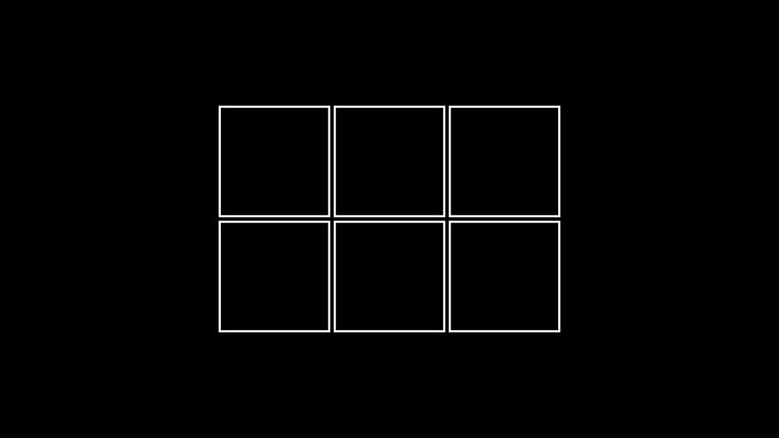
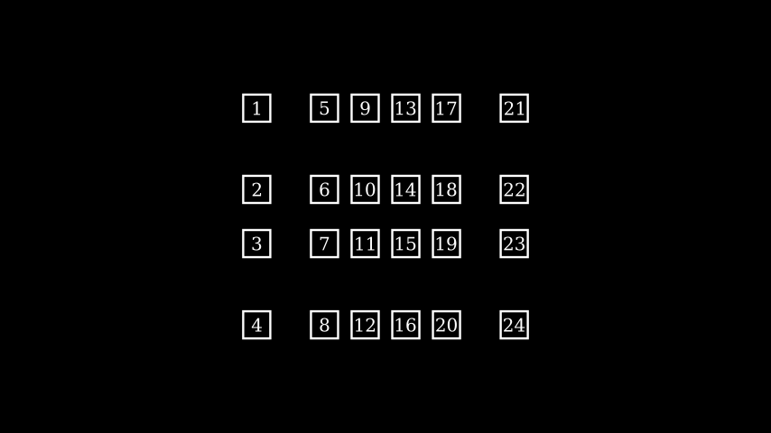
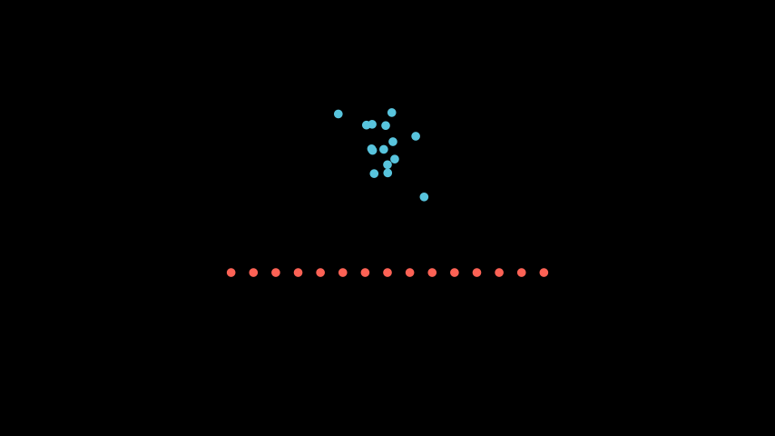
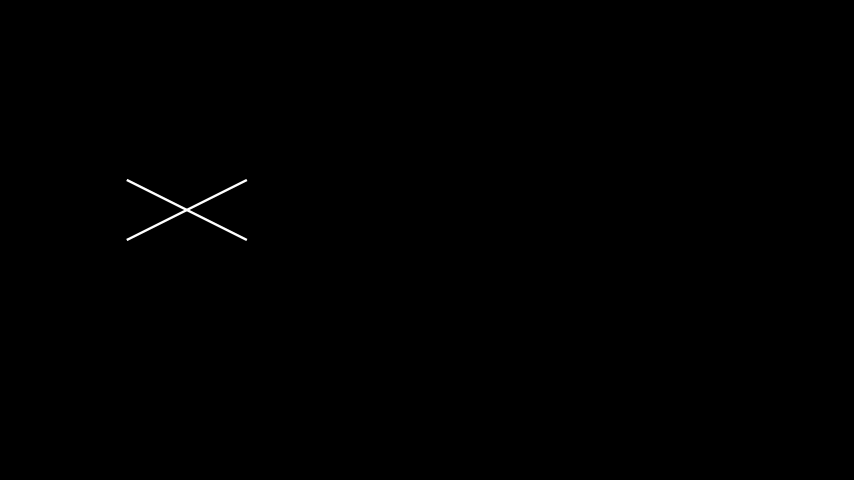
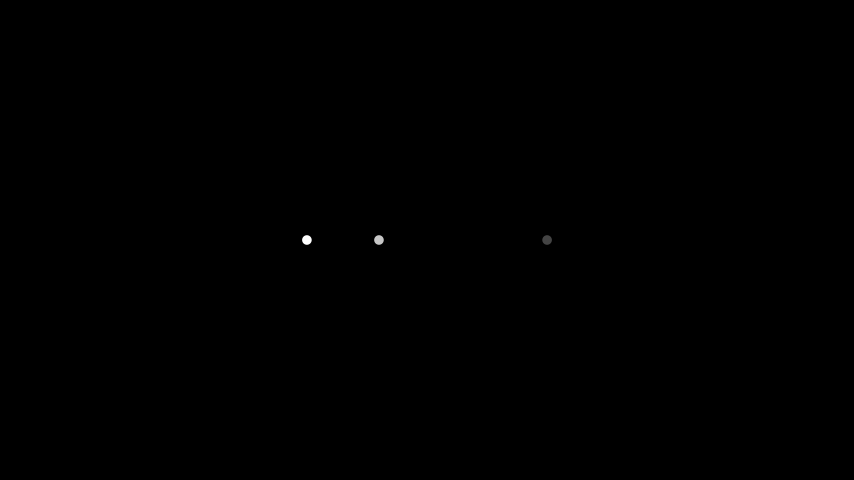
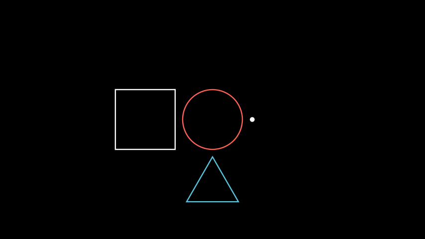
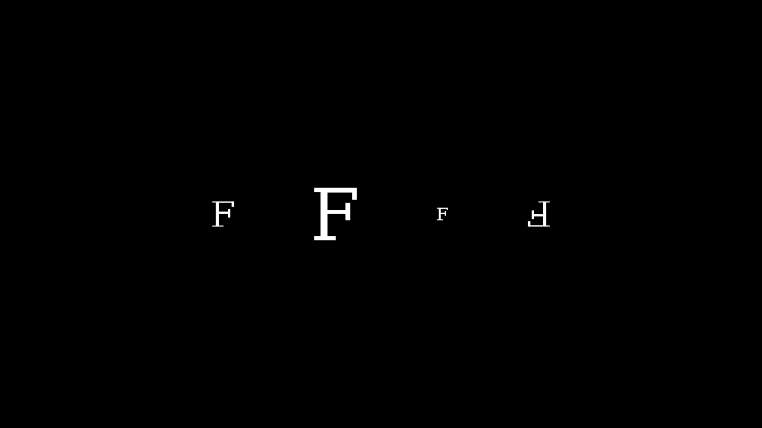
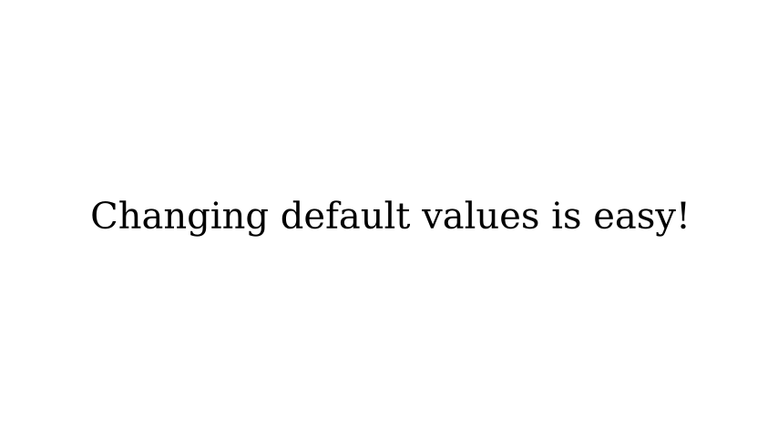
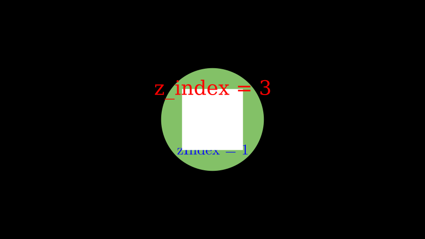

对象(Mobject)
合格名称：manim.mobject.mobject.Mobject
| Python | |
|---|---|
Bases: object
数学对象：可以在屏幕上显示的对象的基类。
有一个兼容层，允许使用get_* 和set_*方法获取和设置通用属性。请参阅set()了解更多详情。
子对象
所包含的物体。
类型
List[ Mobject]
点
物体的点。
也可以看看
类型
numpy.ndarray
方法
add |
将 mobject 添加为子对象。 |
add_animation_override |
添加动画覆盖。 |
add_background_rectangle |
添加一个背景矩形作为子对象。 |
add_background_rectangle_to_family_members_with_points |
|
add_background_rectangle_to_submobjects |
|
add_n_more_submobjects |
|
add_to_back |
将所有传递的 mobject 添加到子 mobject 的后面。 |
add_updater |
向此 mobject 添加更新功能。 |
align_data |
将此 mobject 的数据与另一个 mobject 对齐。 |
align_on_border |
方向只需是指向 2d 平面中的边或角的向量。 |
align_points |
|
align_points_with_larger |
|
align_submobjects |
|
align_to将对象与另一个对象Mobject在某个方向上对齐。 |
|
animation_override_for |
返回为此类定义特定动画覆盖的函数。 |
apply_complex_function |
将复杂函数应用于Mobject. |
apply_function |
|
apply_function_to_position |
|
apply_function_to_submobject_positions |
|
apply_matrix |
|
apply_over_attr_arrays |
|
apply_points_function_about_point |
|
apply_to_family |
递归地将函数应用于self每个带有点的子对象。 |
arrange |
Mobject在屏幕上并排排序。 |
arrange_in_grid |
将子对象排列在网格中。 |
arrange_submobjects |
submobjects安排一个小缓冲区的位置。 |
become |
编辑点、颜色和子对象以使其与其他对象相同Mobject |
center |
|
clear_updaters |
删除所有更新程序。 |
copy |
创建并返回包含Mobject所有submobjects. |
fade |
|
fade_to |
|
family_members_with_points |
|
flip |
围绕其中心翻转/镜像对象。 |
generate_points |
初始化points并因此初始化形状。 |
generate_target |
|
get_all_points |
返回此 mobject 和所有子 mobject 的所有点。 |
get_array_attrs |
|
get_bottom |
获取边界框的底部坐标Mobject |
get_boundary_point |
|
get_center |
获取中心坐标 |
get_center_of_mass |
|
get_color |
返回的颜色Mobject |
get_coord |
旨在概括get_x,get_y和get_z |
get_corner |
获取特定方向的角坐标。 |
get_critical_point |
想象一个包围 的盒子Mobject。 |
get_edge_center |
获取特定方向的边缘坐标。 |
get_end |
返回笔画围绕端点的点Mobject。 |
get_extremum_along_dim |
|
get_family |
|
get_family_updaters |
|
get_group_class |
|
get_image |
|
get_left |
获取边界框的左坐标Mobject |
get_merged_array |
返回此 mobject 和所有子 mobject 的所有给定属性。 |
get_midpoint |
获取形成 的路径中间的坐标 Mobject。 |
get_mobject_type_class |
返回此 mobject 类型的基类。 |
get_nadir |
获取 3D 边界框的最低点（与天顶相对）坐标Mobject。 |
get_num_points |
|
get_pieces |
|
get_point_mobject |
最简单的Mobject就是转化为自我或转化为自我。 |
get_points_defining_boundary |
|
get_right |
获取边界框的正确坐标Mobject |
get_start |
返回围绕笔划的起始点Mobject。 |
get_start_and_end |
以 的形式返回笔划的起点和终点tuple。 |
get_time_based_updaters |
使用该参数返回所有更新程序dt。 |
get_top |
获取边界框的顶部坐标Mobject |
get_updaters |
返回所有更新程序。 |
get_x |
Mobject返回 as 中心的 x 坐标float |
get_y |
Mobject返回 as 中心的 y 坐标float |
get_z |
Mobject返回 as 中心的 z 坐标float |
get_z_index_reference_point |
|
get_zenith |
获取 3D 边界框的天顶坐标Mobject。 |
has_no_points |
检查是否不包含点。Mobject |
has_points |
检查是否Mobject包含点。 |
has_time_based_updater |
测试是否self有基于时间的更新程序。 |
init_colors |
初始化颜色。 |
insert |
将 mobject 插入到 self.submobjects 的特定位置 |
interpolate |
将其转换为和Mobject之间的插值。mobject1 mobject2 |
interpolate_color |
|
invert |
反转 的列表submobjects。 |
is_off_screen |
|
length_over_dim |
Mobject测量某个方向上的长度。 |
match_color |
将颜色与另一个颜色相匹配Mobject。 |
match_coord |
将坐标与另一个 的坐标相匹配Mobject。 |
match_depth |
将深度与另一个深度相匹配Mobject。 |
match_dim_size |
将指定的维度与另一个 的维度进行匹配Mobject。 |
match_height |
将高度与另一个高度匹配Mobject。 |
match_points |
编辑点、位置和子对象使其与另一个相同Mobject，同时保持样式不变。 |
match_updaters |
匹配给定 mobject 的更新程序。 |
match_width |
将宽度与另一个 的宽度匹配Mobject。 |
match_x |
匹配 x 坐标。 |
match_y |
匹配 y 坐标。 |
match_z |
匹配 z 坐标。 |
move_to |
将中心移动Mobject到某个坐标。 |
next_to |
将其移动到另一个坐标或坐标Mobject旁边。Mobject |
nonempty_submobjects |
|
null_point_align |
如果一个Mobject有点与一个没有点对齐，则将两者视为组，并将有点的一个推入其自己的子对象列表中。 |
point_from_proportion |
|
pose_at_angle |
|
proportion_from_point |
|
push_self_into_submobjects |
|
put_start_and_end_on |
|
reduce_across_dimension |
查找此对象和子对象中所有点的维度的最小值或最大值。 |
remove |
删除submobjects. |
remove_updater |
删除更新程序。 |
repeat |
这可以使过渡动画更好 |
repeat_submobject |
|
replace |
|
rescale_to_fit |
|
reset_points |
设置points为空数组。 |
restore |
恢复之前用 保存的状态save_state()。 |
resume_updating |
启用从更新程序和动画的更新。 |
reverse_points |
|
rotate |
Mobject围绕某个点旋转。 |
rotate_about_origin |
绕原点旋转Mobject，原点位于 [0,0,0]。 |
save_image |
仅将其所在位置的图像保存Mobject到 png 文件中。 |
save_state |
保存当前状态（位置、颜色和大小）。 |
scale |
按一个因子缩放大小。 |
scale_to_fit_depth |
缩放Mobject以适应深度，同时保持宽度/高度成比例。 |
scale_to_fit_height |
缩放Mobject以适应高度，同时保持宽度/深度成比例。 |
scale_to_fit_width |
缩放Mobject以适应宽度，同时保持高度/深度成比例。 |
set |
设置属性。 |
set_color |
条件是接受一个参数 (x, y, z) 的函数。 |
set_color_by_gradient |
|
set_colors_by_radial_gradient |
|
set_coord |
|
set_default |
设置关键字参数的默认值。 |
set_submobject_colors_by_gradient |
|
set_submobject_colors_by_radial_gradient |
|
set_x |
Mobject设置(int或float)中心的 x 值 |
set_y |
Mobject设置(int或float)中心的 y 值 |
set_z |
Mobject设置(int或float)中心的 z 值 |
set_z_index |
Mobject将的设置为 z_index_valuez_index中指定的值。 |
set_z_index_by_z_coordinate |
将Mobject'sz 坐标设置为 的值z_index。 |
shift |
按给定向量移位。 |
shift_onto_screen |
|
show |
|
shuffle |
随机排列 的列表submobjects。 |
shuffle_submobjects |
打乱顺序submobjects |
sort |
submobjects通过 定义的函数对的列表进行排序submob_func。 |
sort_submobjects |
排序submobjects |
space_out_submobjects |
|
split |
|
stretch |
|
stretch_about_point |
|
stretch_to_fit_depth |
拉伸Mobject以适应深度，而不保持宽度/高度成比例。 |
stretch_to_fit_height |
拉伸Mobject以适应高度，而不保持宽度/深度成比例。 |
stretch_to_fit_width |
拉伸Mobject以适应宽度，而不保持高度/深度成比例。 |
surround |
|
suspend_updating |
禁用更新程序和动画的更新。 |
throw_error_if_no_points |
|
to_corner |
|
to_edge |
|
to_original_color |
|
update |
应用所有更新程序。 |
wag |
属性
animate |
用于对 的任何方法的应用程序进行动画处理self。 |
animation_overrides |
|
depth |
对象的深度 |
height |
mobject 的高度。 |
width |
mobject 的宽度。 |
| Python | |
|---|---|
将 mobject 添加为子对象。
mobjects 添加到submobjects.
mobject 的子类可以实现+和+=删除方法。
参数
mobjects ( Mobject ) – 要添加的 mobject。
返回
self
返回类型
提高
- ValueError – 当 mobject 尝试添加自身时。
- TypeError – 当尝试添加不是 的实例的对象时
Mobject。
笔记
一个 mobject 不能包含它自己，也不能多次包含一个子对象。如果显示父级对象，则新添加的子级对象也会显示（即它们会自动添加到父级场景中）。
也可以看看
例子
不会再次添加重复项：
将对象添加到自身会引发错误：
| Bash | |
|---|---|
给定的 mobject 不能作为子对象两次添加到某个父对象：
| Bash | |
|---|---|
| Python | |
|---|---|
添加动画覆盖。
这不适用于子类。
参数
- Animation_class ( type [ Animation ] ) – 要覆盖的动画类型
- override_func ( Callable [ [ Mobject , ... ] , Animation ] ) – 返回动画替换默认动画的函数。它传递给动画构造函数的参数。
提高
MultiAnimationOverrideException – 如果覆盖的动画已被覆盖。
| Python | |
|---|---|
添加一个背景矩形作为子对象。
背景矩形添加在其他子对象后面。
这可用于增加嘈杂背景前的对象可见性。
参数
- color ( Colors | None ) – 背景矩形的颜色
- opacity ( float ) – 背景矩形的不透明度
- kwargs – 传递给 BackgroundRectangle 构造函数的附加关键字参数
返回
self
返回类型
也可以看看
add_to_back(*mobjects)
将所有传递的 mobject 添加到子 mobject 的后面。
如果submobjects已经包含给定的 mobject，它们只是移到后面。
参数
mobjects ( Mobject ) – 要添加的 mobject。
返回
self
返回类型
笔记
从技术上讲，这是通过将 mobject 添加（或移动）到 的头部来完成的
submobjects。首先渲染此列表的头部，这将相应的 mobject 放置在后续列表成员的后面。
提高
- ValueError – 当 mobject 尝试添加自身时。
- TypeError – 当尝试添加不是 的实例的对象时
Mobject。
参数
mobjects ( Mobject ) –
笔记
一个 mobject 不能包含它自己，也不能多次包含一个子对象。如果显示父级对象，则新添加的子级对象也会显示（即它们会自动添加到父级场景中）。
也可以看看
| Python | |
|---|---|
向此 mobject 添加更新功能。
更新函数，简称更新器，是在每一帧中应用于 Mobject 的函数。
参数
- update_function ( Updater ) – 要添加的更新函数。每当
update()调用时，都会使用self第一个参数来调用此更新函数。更新程序可以有第二个参数dt。如果使用此参数，则会使用第二个值来调用它dt，该值通常表示自上次调用以来的时间（以秒为单位）update()。 - index ( int | None ) – 应添加新更新程序的索引
self.updaters。如果index是的话None，更新程序将添加在最后。 - call_updater ( bool ) – 最初是否调用更新程序。如果
True，将使用 调用更新程序dt=0。
返回
self
返回类型
例子
示例：NextToUpdater
示例：DtUpdater
| Python | |
|---|---|
也可以看看
align_data(mobject, skip_point_alignment=False)
将此 mobject 的数据与另一个 mobject 对齐。
之后，这两个 mobject 将具有相同数量的子对象（请参阅align_submobjects()）和相同的父结构（请参阅 null_point_align()）。如果skip_point_alignment为 false，它们也将具有相同数量的点数（请参阅align_points()）。
参数
- mobject ( Mobject ) – 该 mobject 应与其对齐的另一个 mobject。
- Skip_point_alignment ( bool ) – 控制是否跳过计算量大的点对齐（默认值：False）。
align_on_border(direction, buff=0.5)
方向只需是指向 2d 平面中的边或角的向量。
align_to(mobject_or_point, direction=array([0., 0., 0.]))
将对象与另一个对象Mobject在某个方向上对齐。
示例： mob1.align_to(mob2, UP) 垂直移动 mob1，使其顶部边缘与 mob2 的顶部边缘对齐。
参数
mobject_or_point ( Mobject | np.ndarray |__list) –
属性 animate： _AnimationBuilder | T
用于对 的任何方法的应用程序进行动画处理self。
任何调用的方法animate都会转换为将该方法应用于 mobject 本身的动画。
例如，square.set_fill(WHITE)设置正方形的填充颜色，同时square.animate.set_fill(WHITE)为该动作设置动画。
可以通过链接将多个方法放入单个动画中：
| Python | |
|---|---|
警告
Mobject不鼓励在一次调用中传递多个动画，play()并且很可能无法正常工作。而不是写一个像这样的动画
Python 利用方法链。
可以传递给的关键字参数Scene.play()可以在访问后直接传递.animate，如下所示：
| Python | |
|---|---|
当您希望以不同的方式同时进行 .animate 调用动画时，这尤其有用
| Python | |
|---|---|
也可以看看
例子
示例：AnimateExample
| Python | |
|---|---|
示例：AnimateChain 示例
| Python | |
|---|---|
示例：AnimateWithArgsExample
| Python | |
|---|---|
警告
.animate
Mobject将在应用到它之前的点.animate和应用到它之后的点之间插入.animate。当尝试沿路径或旋转进行插值时，这可能会导致意外行为。如果您希望动画考虑之间的点，请考虑使用ValueTracker更新程序。
| Python | |
|---|---|
返回为此类定义特定动画覆盖的函数。
参数
Animation_class ( type [ Animation ] ) – 应返回覆盖函数的动画类。
返回
该函数返回覆盖动画，或者None如果没有定义此类动画覆盖。
返回类型
Optional[Callable[[ Mobject , …],Animation]]
apply_complex_function(function, **kwargs)
将复杂函数应用于Mobject. x 和 y 坐标分别对应于实部和虚部。
例子
示例：ApplyFuncExample
apply_to_family(func)
递归地将函数应用于self每个带有点的子对象。
参数
func ( Callable [ [ Mobject ] , None ] ) – 应用于每个 mobject 的函数。func获取相应的（子）对象作为参数传递。
返回
self
返回类型
也可以看看
family_members_with_points()
| Python | |
|---|---|
Mobject在屏幕上并排排序。
例子
示例：示例

| Python | |
|---|---|
参数
direction(Sequence[float]) –
| Python | |
|---|---|
将子对象排列在网格中。
参数
- rows ( int | None ) – 网格中的行数。
- cols ( int | None ) – 网格中的列数。
- buff ( float | tuple [ float , float ] ) – 网格单元之间的间隙。要在水平和垂直方向指定不同的缓冲区，可以给出两个值的元组 - 。
(row, col) - cell_alignment ( np.ndarray ) – 每个子对象在其网格单元中对齐的方式。
- row_alignments ( str | None ) – 每行的垂直对齐方式（从上到下）。接受以下字符：
"u"- 向上、"c"- 居中、"d"- 向下。 - col_alignments ( str | None ) – 每列的水平对齐方式（从左到右）。接受以下字符
"l"- 左、"c"- 中、"r"- 右。 - row_heights ( Iterable [ float | None ] | None ) – 定义某些行的高度列表（从上到下）。如果列表包含
None，则相应的行将根据该行中最高的元素自动适应其高度。 - col_widths ( Iterable [ float | None ] | None ) – 定义某些列的宽度列表（从左到右）。如果列表包含
None，则相应的列将根据该列中最宽的元素自动适应其宽度。 - flow_order ( str ) – 子对象填充网格的顺序。可以是以下值之一：“rd”、“dr”、“ld”、“dl”、“ru”、“ur”、“lu”、“ul”。（“rd” -> 向右填充然后向下填充）
返回
self
返回类型
提高
- ValueError – 如果
rows和cols太小而无法容纳所有子对象。 - ValueError – 如果
cols、col_alignments和col_widths或rows、row_alignments和 的row_heights大小不匹配。
笔记
如果仅隐式设置cols和之一rows，则将选择另一个足够大的值以适合所有子对象。如果两者均未设置，则它们将被选择为大致相同，趋于cols> rows（仅仅是因为视频的宽度大于高度）。
如果 和cell_alignment/row_alignments都col_alignments被定义，则后者具有更高的优先级。
例子
示例：示例框

| Python | |
|---|---|
示例：排列网格

arrange_submobjects(*args, **kwargs)
submobjects安排一个小缓冲区的位置。
例子
示例：ArrangeSumobjects 示例

| Python | |
|---|---|
编辑点、颜色和子对象以使其与其他对象相同Mobject
笔记
如果 match_height 和 match_width 都是，
True那么转换后将Mobject首先匹配高度，然后匹配宽度
参数
- match_height ( bool ) – 如果
True，则转换后的Mobject高度将与原始高度匹配 - match_width ( bool ) – 如果
True，则转换后的宽度Mobject将与原始宽度匹配 - match_depth ( bool ) – 如果
True，则转换后的深度Mobject将与原始深度匹配 - match_center ( bool ) – 如果
True，则变换后的图像Mobject将与原始图像的中心匹配 - stretch ( bool ) – 如果
True，则变换后的图像Mobject将拉伸以适合原始图像的比例 - mobject ( Mobject ) –
- copy_submobjects ( bool ) –
返回类型： Self
例子
示例：成为场景
| Python | |
|---|---|
center()
将对象的中心移动到场景的中心。
返回： 居中的对象。
返回类型： Mobject
clear_updaters(recursive=True)
删除所有更新程序。
参数
recursive ( bool ) – 是否递归调用clear_updaters所有子对象。
返回
self
返回类型
也可以看看
copy()
创建并返回包含Mobject所有 submobjects.
返回
副本。
返回类型
参数
self(T) –
笔记
克隆最初在场景中不可见，即使原始版本可见。
属性 depth
对象的深度。
返回类型
float
也可以看看
flip(axis=array([0., 1., 0.]), **kwargs)
围绕其中心翻转/镜像对象。
例子
示例：FlipExample

| Python | |
|---|---|
generate_points()
初始化points并因此初始化形状。
被创造召唤。这是一个空方法，可以由子类实现。
get_all_points()
返回此 mobject 和所有子 mobject 的所有点。
可能包含重复项；该顺序是子对象的深度优先（前序）遍历。
返回类型
ndarray
get_bottom()
获取边界框的底部坐标Mobject
返回类型
ndarray
get_center()
获取中心坐标
返回类型
ndarray
get_color()
返回的颜色Mobject
get_coord(dim, direction=array([0., 0., 0.]))
旨在概括get_x,get_y和get_z
get_corner(direction)
获取特定方向的角坐标。
返回类型
ndarray
get_critical_point(direction)
想象一个包围 的盒子Mobject。这样的盒子有 9 个“临界点”：4 个角、4 个边缘中心、中心。这将沿着给定方向返回其中之一。
| Python | |
|---|---|
get_edge_center(direction)
获取特定方向的边缘坐标。
返回类型
ndarray
get_end()
返回笔画围绕端点的点Mobject。
get_left()
获取边界框的左坐标Mobject
返回类型
ndarray
get_merged_array(array_attr)
返回此 mobject 和所有子 mobject 的所有给定属性。
可能包含重复项；该顺序是子对象的深度优先（前序）遍历。
返回类型
ndarray
get_midpoint()
获取形成 的路径中间的坐标 Mobject。
例子
示例：角度中点

| Python | |
|---|---|
返回类型
ndarray
static get_mobject_type_class()
返回此 mobject 类型的基类。
get_nadir()
获取 3D 边界框的最低点（与天顶相对）坐标Mobject。
返回类型
ndarray
get_point_mobject(center=None)
最简单的Mobject就是转化为自我或转化为自我。应由适当类型的点
get_right()
获取边界框的正确坐标Mobject
返回类型
ndarray
get_start()
返回围绕笔划的起始点Mobject。
get_start_and_end()
以 的形式返回笔划的起点和终点tuple。
get_time_based_updaters()
使用该参数返回所有更新程序dt。
更新程序使用此参数作为时间差的输入。
返回
基于时间的更新程序列表。
返回类型
List[ Callable]
也可以看看
get_top()
获取边界框的顶部坐标Mobject
返回类型
ndarray
get_updaters()
返回所有更新程序。
返回
更新者列表。
返回类型
List[ Callable]
也可以看看
get_x(direction=array([0., 0., 0.]))
Mobject返回 as 中心的 x 坐标float
返回类型
float64
get_y(direction=array([0., 0., 0.]))
Mobject返回 as 中心的 y 坐标float
返回类型
float64
get_z(direction=array([0., 0., 0.]))
Mobject返回 as 中心的 z 坐标float
返回类型
float64
get_zenith()
获取 3D 边界框的天顶坐标Mobject。
返回类型
ndarray
has_no_points()
检查是否不包含点。Mobject
返回类型
bool
has_points()
检查是否Mobject包含点。
返回类型
bool
has_time_based_updater()
测试是否self有基于时间的更新程序。
返回
class – True如果至少有一个更新程序使用该dt参数，False 否则。
返回类型
bool
也可以看看
属性 height
mobject 的高度。
返回类型
float
例子
示例：高度示例
也可以看看
init_colors()
初始化颜色。
被创造召唤。这是一个空方法，可以由子类实现。
insert(index, mobject)
将 mobject 插入到 self.submobjects 的特定位置
实际上只是调用 ，其中有一个列表。self.submobjects.insert(index, mobject)``self.submobjects
高度改编自Mobject.add.
参数
- index ( int ) – 所在索引
- mobject ( Mobject ) – 要插入的 mobject。
| Python | |
|---|---|
将其转换为 和Mobject之间的插值。mobject1``mobject2
例子
示例：点插值

| Python | |
|---|---|
invert(recursive=False)
反转 的列表submobjects。
参数
recursive – 如果True，则该对象家族的所有子对象列表都将反转。
例子
示例：InvertSumobjectsExample
| Python | |
|---|---|
length_over_dim(dim)
Mobject测量某个方向上的长度。
match_color(mobject)
将颜色与另一个颜色相匹配Mobject。
参数
mobject ( Mobject ) –
match_coord(mobject, dim, direction=array([0., 0., 0.]))
将坐标与另一个 的坐标相匹配Mobject。
参数
mobject ( Mobject ) –
match_depth(mobject, **kwargs)
将深度与另一个深度相匹配Mobject。
参数
mobject ( Mobject ) –
match_dim_size(mobject, dim, **kwargs)
将指定的维度与另一个 的维度进行匹配Mobject。
参数
mobject ( Mobject ) –
match_height(mobject, **kwargs)
将高度与另一个高度匹配Mobject。
参数
mobject ( Mobject ) –
match_points(mobject, copy_submobjects=True)
编辑点、位置和子对象使其与另一个相同Mobject，同时保持样式不变。
例子
示例：比赛点场景
| Python | |
|---|---|
参数
- mobject ( Mobject ) –
- copy_submobjects ( bool ) –
match_updaters(mobject)
匹配给定 mobject 的更新程序。
参数
mobject ( Mobject ) – 更新程序匹配的 mobject。
返回
self
返回类型
提示： 子对象的所有更新程序都将被删除，但仅匹配给定对象的更新程序，而不是其子对象的更新程序。 也可以看看
add_updater(),clear_updaters()
match_width(mobject, **kwargs)
将宽度与另一个 的宽度匹配Mobject。
参数
mobject ( Mobject ) –
match_x(mobject, direction=array([0., 0., 0.]))
匹配 x 坐标。到 x 坐标。另一个Mobject.
参数
mobject ( Mobject ) –
match_y(mobject, direction=array([0., 0., 0.]))
匹配 y 坐标。到 x 坐标。另一个Mobject.
参数
mobject ( Mobject ) –
match_z(mobject, direction=array([0., 0., 0.]))
匹配 z 坐标。到 x 坐标。另一个Mobject.
参数
mobject ( Mobject ) –
| Python | |
|---|---|
将中心移动Mobject到某个坐标。
| Python | |
|---|---|
将其移动到另一个坐标或坐标Mobject旁边。Mobject
例子
示例：几何形状

| Python | |
|---|---|
null_point_align(mobject)
如果一个Mobject有点与一个没有点对齐，则将两者视为组，并将有点的一个推入其自己的子对象列表中。
返回
self
返回类型
参数
mobject ( Mobject ) –
reduce_across_dimension(reduce_func, dim)
查找此对象和子对象中所有点的维度的最小值或最大值。
参数
dim（int） –
返回类型
float
remove(*mobjects)
删除submobjects.
mobjects 将从 中删除submobjects（如果存在）。
mobject 的子类可以实现-和-=删除方法。
参数
mobjects ( Mobject ) – 要删除的 mobject。
返回
self
返回类型
也可以看看
remove_updater(update_function)
删除更新程序。
如果多次应用相同的更新程序，则每个实例都会被删除。
参数
update_function ( Union [ Callable [ [ Mobject ] , None ] , Callable [ [ Mobject , float ] , None ] ] ) – 要删除的更新函数。
返回
self
返回类型
repeat(count)
这可以使过渡动画更好
参数
count( int ) –
reset_points()
设置points为空数组。
restore()
恢复之前用 保存的状态save_state()。
resume_updating(recursive=True)
启用从更新程序和动画的更新。
参数
recursive ( bool ) – 是否递归地启用所有子对象的更新。
返回
self
返回类型
也可以看看
rotate(angle, axis=array([0., 0., 1.]), about_point=None, **kwargs)
Mobject围绕某个点旋转。
参数
about_point (Sequence[float] | None) –
| Python | |
|---|---|
绕原点旋转Mobject，原点位于 [0,0,0]。
save_image(name=None)
仅将其所在位置的图像保存Mobject到 png 文件中。
save_state()
保存当前状态（位置、颜色和大小）。可以用 恢复restore()。
scale(scale_factor, **kwargs)
按一个因子缩放大小。
默认行为是围绕 mobject 的中心进行缩放。
参数
- scale_factor ( float ) – 比例因子 α。如果 0<|α|<1，mobject 将缩小，并且对于|α|>1 它会成长。此外，如果 α<0，mobject 也被翻转。
- kwargs – 传递给
apply_points_function_about_point().
返回
self
返回类型
例子
示例：MobjectScaleExample

| Python | |
|---|---|
也可以看看
scale_to_fit_depth(depth, **kwargs)
缩放Mobject以适应深度，同时保持宽度/高度成比例。
scale_to_fit_height(height, **kwargs)
缩放Mobject以适应高度，同时保持 宽度/深度 成比例。
返回
self
返回类型
例子
| Bash | |
|---|---|
scale_to_fit_width(width, **kwargs)
缩放Mobject以适应宽度，同时保持高度/深度成比例。
返回
self
返回类型
例子
| Bash | |
|---|---|
set(**kwargs)
设置属性。
即my_mobject.set(foo=1)适用。my_mobject.foo = 1
animate这可以方便地与动画设置属性一起使用。
除了此方法之外，还有一个兼容层，允许使用get_*和set_*方法获取和设置通用属性。例如：
该兼容层不会干扰任何 get_*显set_*式定义的方法。
警告
此兼容层用于向后兼容，不保证保留。如果适用，请优先选择正常或使用
set()方法获取/设置属性。
参数
**kwargs – 要设置的属性和相应的值。
返回
self
返回类型
例子
set_color(color='#FFFF00', family=True)
条件是接受一个参数 (x, y, z) 的函数。这里它只是递归到子对象，但是在子类中，这应该基于颜色的内部工作原理进一步实现
参数
- color（Color）–
- family(bool) –
classmethod set_default(**kwargs)
设置关键字参数的默认值。
如果在没有任何附加关键字参数的情况下调用此方法，则恢复该类的初始化方法的原始默认值。
参数
kwargs – 传递任何关键字参数将更新此类初始化函数的关键字参数的默认值。
例子
| Bash | |
|---|---|
示例：更改默认文本颜色

| Python | |
|---|---|
set_x(x, direction=array([0., 0., 0.]))
Mobject设置(int或float)中心的 x 值
set_y(y, direction=array([0., 0., 0.]))
Mobject设置(int或float)中心的 y 值
set_z(z, direction=array([0., 0., 0.]))
Mobject设置(int或float)中心的 z 值
set_z_index(z_index_value, family=True)
Mobject将的设置为 z_index_valuez_index中指定的值。
参数
- z_index_value ( float ) – set 的新值
z_index。 - family ( bool ) – 如果为
True，z_index则还设置所有子对象的值。
返回
Mobject 本身在z_index设置之后。用于链接目的。（返回self。）
返回类型
例子
示例：SetZIndex

set_z_index_by_z_coordinate()
将Mobject'sz 坐标设置为 的值z_index。
返回
Mobject 本身在z_index设置之后。（返回self。）
返回类型
shift(*vectors)
按给定向量移位。
参数
vectors( ndarray ) – 要移动的向量。如果给出多个向量，则将它们相加。
返回
self
返回类型
也可以看看
shuffle(recursive=False)
随机排列 的列表submobjects。
shuffle_submobjects(*args, **kwargs)
打乱顺序submobjects
例子
示例：ShuffleSubmobjects 示例
| Python | |
|---|---|
| Python | |
|---|---|
submobjects通过 定义的函数对的列表进行排序submob_func。
sort_submobjects(*args, **kwargs)
stretch_to_fit_depth(depth, **kwargs)
拉伸Mobject以适应深度，而不保持宽度/高度成比例。
stretch_to_fit_height(height, **kwargs)
拉伸Mobject以适应高度，而不保持宽度/深度成比例。
返回
self
返回类型
例子
| Bash | |
|---|---|
stretch_to_fit_width(width, **kwargs)
拉伸Mobject以适应宽度，而不保持高度/深度成比例。
返回
self
返回类型
例子
| Bash | |
|---|---|
suspend_updating(recursive=True)
禁用更新程序和动画的更新。
参数
recursive ( bool ) – 是否递归地暂停所有子对象的更新。
返回
self
返回类型
update(dt=0, recursive=True)
应用所有更新程序。
如果更新暂停，则不执行任何操作。
参数
- dt (float) – 要传递给更新函数的参数
dt。通常这是自上次调用update以来的时间（以秒为单位） - recursive ( bool ) – 是否递归更新所有子对象。
返回
self
返回类型
也可以看看
属性 width
mobject 的宽度。
返回类型
float
例子
示例：宽度示例
也可以看看